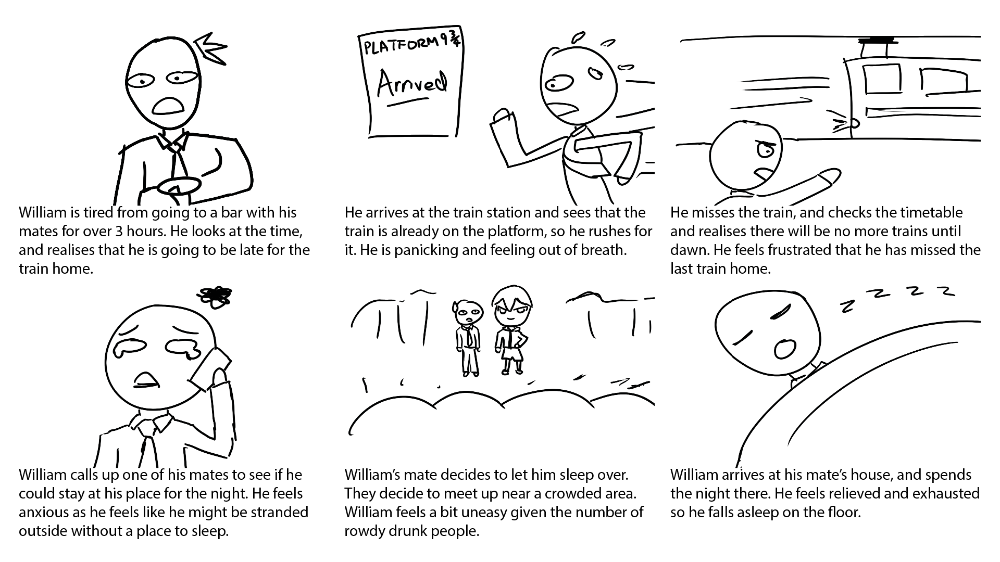
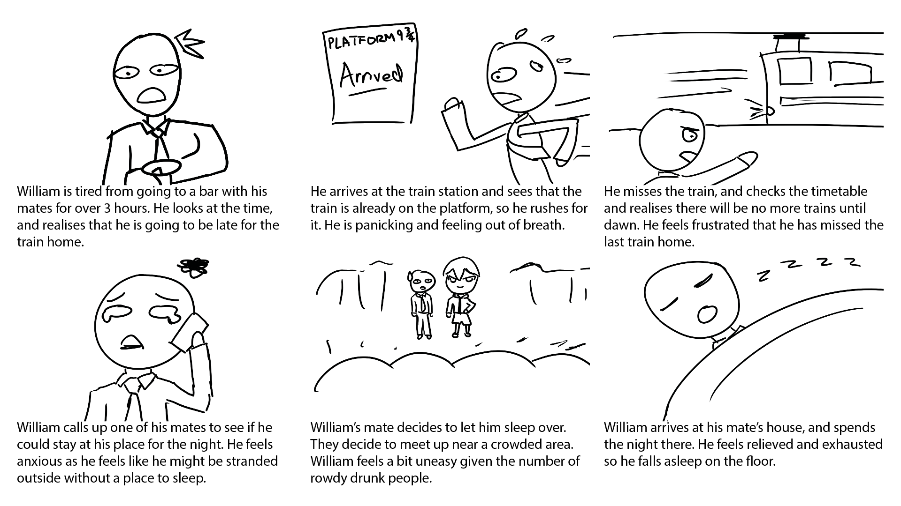

Chaffeur
We will always be your Plan B
Getting People Home Safely
UI/UX Design
Chaffeur is a reliable advisor used to guide intoxicated users home safely. Depending on how intoxicated the user is, Chaffeur will inform users whether they’re fit to drive or that they should choose another mode of transport. With the focus on accessibility in mind, we put together a streamlined experience that is easily understandable to an intoxicated user.
Drink-driving and Alcohol related incidents are a common feature in the news, and we sought to change this by designing an interface that facilitates the use of autonomous cars. These vehicles can operate without human control; thus they are a suitable technology to solve these alcohol related problems. Users will not feel pressured to drive while intoxicated, or be left stranded after the last train or bus has departed. By doing so, we reduce the likelihood of incidents occurring.

Design Process
Background Research


 

Through our background research, the main concerns identified which could have an impact on a user’s sense of safety were the following.
- The conditions and reputation of the location they are in.
- Whether or not transport is easily accessible when they leave.
- The level of intoxication of their peers and themselves.
- The number of people are accompanying them.
- Strangers are potentially dangerous people.
Elaboration


User Research

Key issues identified through our user testing were.
- Intoxicated users do not have enough fine motor control.
- Large volumes of text are likely to be skipped over.
- Buttons were spread out which made it easy to get lost.
Design Choices


Reflections
Throughout the design process, we were efficient and were very confident with our design choices. However, there are some areas we could have performed better. Our choice of prototyping platforms had limited documentation and had many glitches which limited our ability to produce a higher fidelity prototype. During our user testing, we could have gotten more accurate results by testing with intoxicated users at an actual bar instead of asking our users to imagine that they were intoxicated. Despite all these issues, we are confident that Chaffeur in its current state will minimise drink driving and prevent people being stranded late in the night. With further development, Chaffeur will perform better in aiding users to safer and more efficient transport options.

Team Poe Tay Toe
- Eric Lam
- Nicholas Ho
- Ray Hwang